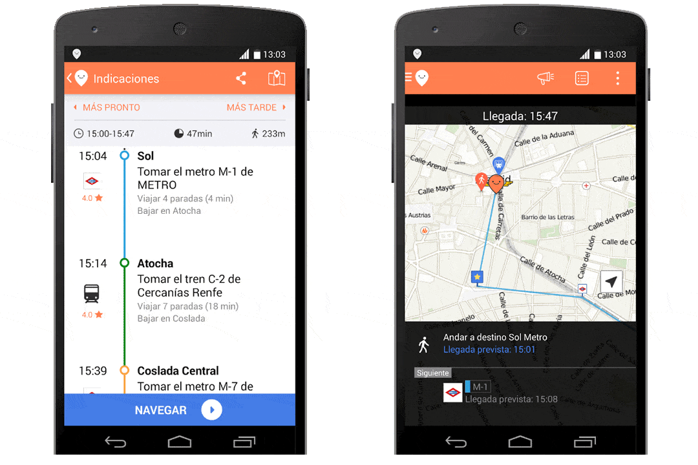
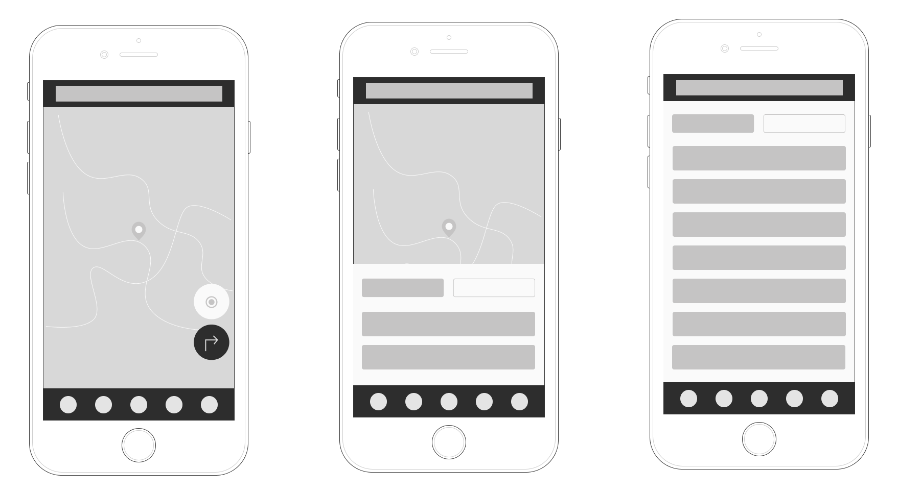
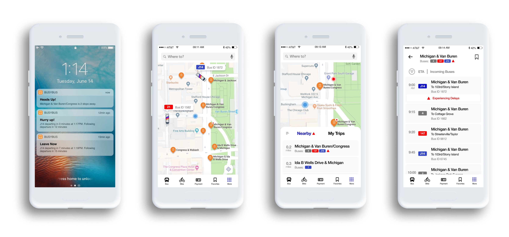
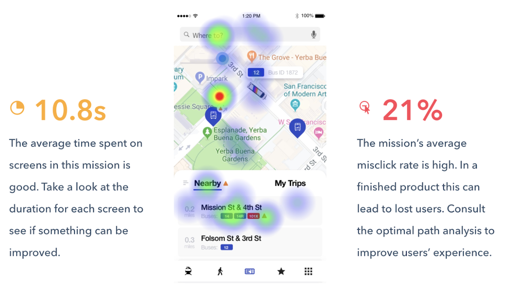
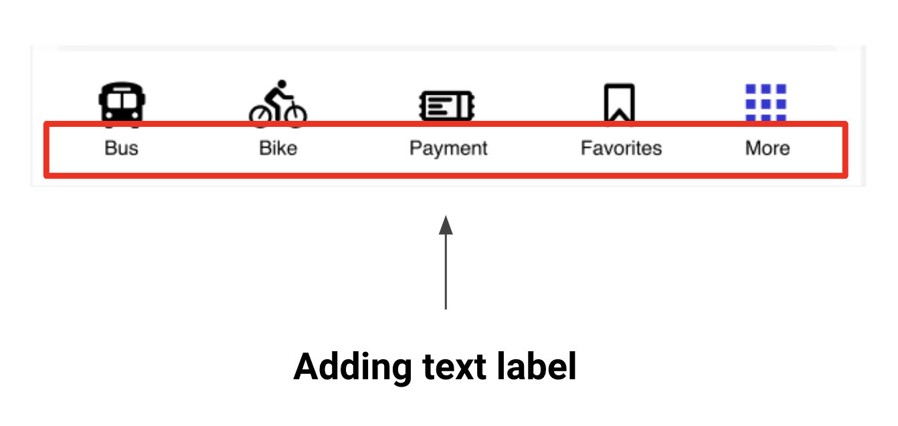

What is BusyBus?
The
concept of public transit trackers isn’t new but it does offer up a
wealth of opportunities to work with imperfect data that is incredibly
important to the users of a given app or service. Transit officials
have identified a problem they would like to solve. Due to expansion,
numerous bus routes have been recently added and many of those routes
stop at the same bus stop. Riders want to know what the next arriving
bus is and how much time they have to get to the bus stop. Simply
rushing to the stop when you see a bus coming no longer works because
it might not be the bus the rider is expecting Riders are currently
complaining the most about the bus stop at Washington and State, which
has seven bus lines serving the stop.
View Mobile Prototype |
View Code via Github Repo
Role: UX Design, Visual Design, Brand Identity, Frontend
Deliverables: User Surveys, Competitive Analysis, User
Personas, User Stories & Flows, Wireframes, Usability Testing, High
Fidelity Mockups, Prototype, Frontend Development
Tools: Figma, Sketch, InVision, Photoshop, Illustrator, Maze,
UsabilityHub, Github, Atom

Problem Solving
CHAPTER #1 — Problems and Solutions
Any public transport app comes with a set of features to help people
move around a city using all the transportation options it has to
offer. Transit maps are complicated. Each city has it’s a unique set
of complex public transportation networks, some with just subways and
buses, others with cable cars, streetcars, and light rails. And The
app must combine a simple interface with abundant functionality to
serve its purpose.
How might we solve bus riders' frustrations by giving them two
basic pieces of information: what bus is arriving next? And how much
time do they have to get to the bus stop?
Due to a recent expansion, numerous bus routes have been recently
added and many of these routes stop at the same bus stop. The simple
answer is to create an app that will give the bus riders the needed
information to make the correct decision and alleviate tension. Asking
the who, the what, the when, where and how were important questions in
our next process.

Discovery phase
CHAPTER #2 — The Power of Research
Understanding bus riders was important to developing a research plan. The design concept needed to be grounded in research from real user needs not simply from holes within the current market. First, a competitive usability evaluation was conducted with 5 users to understand what works well and what are some pain points. Additionally, a diverse group of public transportation riders were surveyed regarding their mobile-app public transportation preferences and attitudes.
Above are the results from a semi-annual onboard customer satisfaction survey. 88% of respondents were satisfied with their local transportation overall service, and 90% were likely to continue riding public transportation. And the bus services have improved their satisfaction through the years.

Understanding the users
According to my
survey, there were three major learnings:
1. Bus riders rely heavily on apps whether it is
Google maps or local transit apps. The key insight gained here is that
riders are tired of the apps giving them incorrect data. (Typically
local transit apps as opposed to Google Maps)
2. Riders want to know what the next arriving bus is
and how much time they have to get to the bus stop.
3. We learned through several iterations that users
simply want to get from A-to-B. This was evident through observation
and feedback that users were visibly frustrated xxxx. But it caused
frustration because users just wanted the basic local route times.

Competitive Analysis
There is Google Maps easily to find the right timing and pathway to get to your destination, and then there’s Moovit, a public-transit-tracking app. There are both our competitors. The goal is to not only help plan trips but also keep users informed with basic information that they already need. Users might need an arrival time because they know where they’re trying to go. For an app like ours, users will have a similar experience inside the app to what they see in reality, that’s what’s most important. The app will provide alerts in the event of delays and shutdowns in addition to tracking regular bus routes in real-time. And another prominent feature is you can load money onto the app and scan the QR code to pay.
Google Maps
is a web mapping service developed by Google. It offers satellite
imagery, aerial photography, street maps, 360° panoramic views of
streets, real-time traffic conditions, and route planning for
traveling by foot, car, bicycle, and air, or public transportation.
Positioning:
Google is probably the world’s best-known company for pioneering the
search engine revolution and providing a means for the internet users
of the world to search and find information at the click of a mouse.
Further, Google is also known for its work in organizing information
in a concise and precise manner that has been a game changer for the
internet economy and by extension, the global economy because
corporations, individuals, and consumers can search and access
information about anything, anywhere and anytime.
Primary Audience:
The campaign’s focus was on getting iOS users between the ages of 20
and 40 to engage with the Google Maps brand, specifically targeting
high-consumption mobile users. The demographic targeting was broad
because Google Maps is a product everyone can use, and mobile gamers
have become synonymous with mobile users. Approximately 73 percent of
the campaign’s target audience plays online games at least once per
month.
Differentiators: Google Maps allows you to download maps of
certain areas and neighborhoods to your phone so that they can be
accessed offline. It’s important to note that you will need to be
connected to the Internet in order to save these maps to your device.
But once they’ve been downloaded, you’ll be able to access them
anytime, whether your phone is online or offline. There are also some
limitations to keep in mind. When downloading maps for offline use,
you’ll only be able to access driving directions, since transit,
bicycling, and walking directions are only available online.
Complete SWOT Analysis
Here

Moovit
offers a real-time journey planner mobile and web app to navigate
public transit networks with GPS navigation across transit modes,
including buses, ferries, rapid transit (metro/subway/underground,
etc.) trains, trams, and trolleybuses. Users can access a live map,
and view nearby stops and stations based on their current GPS
location, as well as plan trips across transportation modes based on
real-time data.
Positioning:
For people that use public transportation a lot, or who rarely use it
but need to on occasion, it can be difficult at times to figure out
where you need to be to get where you need to go. Which route to
choose, which stops to wait at, and times of departure can all be
pretty daunting, and can slightly change the whim. Fortunately, there
is an app for that. Moovit is divided into three simple categories:
directions, stations, and lines. This lets you route your trip or
search for real-time arrival information at any bus stop or train
station in your city. If you’re a world traveler and only have space
on your phone for one app, Moovit is your best bet!
Primary Audience and Differentiators: Moovit is designed to
track the current public transit routes and travel times. A user
simply needs to input a destination, allow the app to track the
current location, and pick a route that they would prefer to take.
Once it transit, a user can run the route, and it will track your
current location and all the stops in between where you started and
where you want to go, noticing you how many stops left and when you
should request your stop. The app is available in 1,400 cities in 77
countries (and 43 different languages, as a result). Moovit’s true
distinction from other transit apps is its massive database of user
data. The company combines publicly available data with live
information from 60 million users.
Complete SWOT Analysis
Here

User Personas
Personas are helpful throughout the entire product development phase: from deciding on which features to have in a prototype, to evaluating the end product. When combined with additional user experiences design methods, such as usability testing and task analyses, personas are vital to launching a useful and usable solution. Enter Michael, Sam and Yue, three vastly different personas to embody the full range of Cube Cloud’s target audience.


Mapping the MVP with user stories & flows
To create list of user stories, I concentrated on the features that the app should have based on the main concerns and findings from the survey. I work mainly on all the stories that I deemed “high priority”, but I also included 2 “medium priority stories” to come out with a well-rounded MVP.

Branding & Identity
CHAPTER # 3 — The color of the BusyBus
After the users research, I was ready to work on the branding. I began the brainstorm by using a mind-mapping exercise to curate a concept that communicated the formation of an idea when many people come together. The primary colors orange and blue are the two dominant colors combination of energy and trust. It uses a split-complementary color scheme for contrast.

Drawing Board
CHAPTER # 4 — To build the skeletal structure
The best way I’ve found to quickly, easily, and comprehensively communicate with is to share sketches and user flows throughout the whole project. Not only does this help me articulate how I plan to tackle a problem, but by thinking out loud on paper, it allows everyone—myself, designers, or even clients—to see how ideas begin, evolve, and finally crystallize into the solution we’ve all been working toward.
This shows a simple user flow for one interaction - the user needs to get from the map, find their nearest bus stop, and then find all the incoming buses to that bus stop

Round 1: Testing the wireframe prototype
If I had moved onto wireframe testing at this point in the process, I would have overlooked some of the most glaring issues living within my wireframes. Before moving onto high fidelity mockups, I needed to validate my design decisions through testing. To do this, I conducted Usability Tests with 3 participants with this prototype in-person usability tests using a wireframe clickable prototype and a test script.
Wireframes: Bus map and real-time tracking
The participants were given different scenarios such as “You are walking towards the nearest bus stop on Washington and State and need to check all the incoming buses.” Some of my key takeaways from the usability test were that users liked the visual representation of the buses on the app but said they wanted to differentiate between the bus lines.
Layering on the skin
Keeping the branding and user flows in mind, I transformed my wireframes into high fidelity mockups by weaving in the branding to build the final prototype.
Prototype: Bus map and real-time tracking

Prototypes
Busybus is a real-time journey planner mobile app to navigate public transit networks with GPS navigation across transit modes, including buses, ferries, rapid transit, trains, trams, and trolleybuses. Users can access real-time location sharing and offline functionality, which offers downloadable maps. Also, you can load money onto the app and scan the QR code when getting on the train to pay. We dream of happier communities, where multiple modes work together, and getting from A to B with Transit is simpler than climbing into a car. Our cities came long before the car, and will still be around after all the cars are gone.
VIEW PROTOTYPE
User Testing Results
User testing brought about positive interest; they like the payment option on the app. However, improvements can be made. Several participants pointed out unclear navigation from screen-to-screen. This is a usability issue that I would address by adding a ‘back’ button. One participant further suggested exploring notifications for bus delays. Overall, the testing prototype was a solid first step in surfacing feedback and design directions.
Finding 1. I used Maze to test usability testing, and it shows the average time spent on the screens is good, and overall, our mission gets 91.7% with the expected path. But the misclick rate is high, might consider adding a text label to the navigation bar on the bottom.
Recommendation 1. Adding a text label to the navigation bar on the bottom.
 
The Final Product
CHAPTER # 5— THE GRAND FINALE
UX design has many parts, and putting all those parts together to come up with a workable solution was challenging. I have grown a lot through this process and gained valuable insight into the design process. Having minimal information on a final product and no content presented its own set of challenges. If I had more time to work on this project, I would have gotten more creative with some of the features that I offered in my solution. Data showed that some participants indicated that they would like to see newer technology used. Something critical that I found out from users is that even in this era of technology, there are still so many people who could care less about it and didn’t feel they needed to conduct their life functions. I will use this experience and the knowledge gained through this process to continue learning, so I can be a part of creating beautiful user experiences for future product users.
The final BusyBus prototype after both rounds of user testing and iterations can be viewed here.